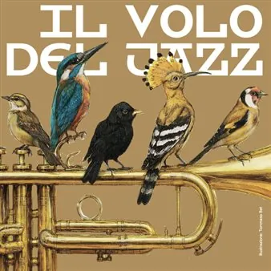

da dom 18 ott a sab 27 feb
Il Volo del Jazz 2026
La rassegna di Sacile ospita protagonisti del jazz internazionale, nuovi linguaggi musicali e iniziative collaterali, con concerti distribuiti nella stagione.
 Indicazioni
Indicazioni
- Costi e prenotazioni
- Costo non indicato · Prenotazione non indicata
- Programma
- Programma raccolto. Gli appuntamenti delle diverse schede sono riuniti in questa pagina.
- In caso di maltempo
- Nessuna indicazione specifica pubblicata.
- Note
- Le schede dei singoli appuntamenti sono state unite nella manifestazione principale.
L’EVENTO
Descrizione completa
La 22ª edizione de "Il Volo del Jazz" presenta sei concerti, con un programma che attraversa generazioni, geografie e linguaggi diversi, mettendo in dialogo grandi protagonisti della scena internazionale e nuove voci del jazz contemporaneo. Annunciati anche due appuntamenti nel 2027 per celebrare Pordenone Capitale della Cultura.
Il cuore pulsante resta la musica dal vivo, affidata a nomi che incarnano l’eccellenza e la varietà del jazz contemporaneo.
Il 18 ottobre alle 18.30, alla Fazioli Concert Hall, il prologo sarà affidato al pianista americano Jason Moran , con un concerto per pianoforte solo.
Il 7 novembre, sempre alle 21.00 allo Zancanaro, e sempre dagli Usa Emmet Cohen presenterà “Miles & Coltrane at 100” , con Joseph Ranieri, Joe Farnsworth, Tivon Pennicott e Benny Benack III.
Il 22 novembre, in collaborazione con la rassegna Gli Occhi dell’Africa, arriveranno Les Amazones d’Afrique , collettivo femminile portavoce di uguaglianza e diritti.
Il 14 novembre toccherà alla bassista polacca Kinga Głyk , con Nicolas Viccaro, Lucas Saint-Cricq e Arkadiusz Grygo.
Il 21 novembre Michael Mayo grande vocalist e improvvisatore americano porterà “Fly” , con Andrew Freedman, Nicholas Campbell e Robin Baytas.
Chiusura il 28 novembre con Sergio Cammariere e “La pioggia che non cade mai” , alle 21, con la sua band.
Nel 2027, il 19 febbraio alla Fazioli Concert Hall il duo di pianoforti con Danny Grissett e Francesca Tandoi ; il 27 febbraio al Teatro Zancanaro Omar Sosa presenterà “Sendas” .
Eventi collaterali:
mostra digitale Il Jazz Italiano per le Terre del Sisma 2015-2026 , progetto fotografico nato dalle immagini realizzate nel corso degli anni da numerosi fotografi che hanno documentato il rapporto fra la musica e i territori colpiti dal terremoto.
JAZZ TALES - Monografia su John Coltrane a cura di Pasquale Mega, domenica 8 novembre alle 16.00 a Palazo Ragazzoni.
JAZZ TALES - “Io MusicAI, Noi Musicammo...” , a cura di Federico Fontana , venerdì 13 novembre alle 21, a Palazzo Ragazzoni.
Qui il programma dettagliato dell'iniziativa
Info biglietti e abbonamenti
Contatti: ticket@controtempo.org / +39 331 1722777
IL PROGRAMMA
Programma e orari
Le singole date appartengono alla stessa manifestazione. Ogni sede verificata dispone delle proprie indicazioni.
Programma completo della manifestazione
- Il calendario integrale è disponibile nella fonte ufficiale e può comprendere appuntamenti precedenti o successivi alle tre settimane mostrate.
Da Domenica 18 ottobre a Sabato 27 febbraio · Il Volo del Jazz
Sacile · Teatro Politeama Zancanaro Fazioli Concert Hall Palazzo Ragazzoni
- La XXII edizione de "Il Volo del Jazz" presenta sei concerti con i grandi nomi del jazz internazionale, un programma di eventi collaterali che intreccia musica, immagini e narrazioni
Sabato 31 ottobre · Il Volo del Jazz: Nate Smith
Sacile · Teatro Zancanaro
- Per Nate Smith il ritmo è molto più di una struttura musicale: è un linguaggio capace di raccontare il presente. Due volte vincitore del Grammy Award, batterista, compositore e produttore, ha ridefinito il ruolo del suo strumento attraversando con naturalezza jazz, funk, R&B e…
Sabato 7 novembre · Il Volo del Jazz: Emmet Cohen
Sacile · Teatro Zancanaro
- Tradizione e modernità convivono naturalmente nel pianismo di Emmet Cohen. Il suo tocco elegante, la profonda conoscenza della storia del jazz e una naturale capacità di dialogare con il pubblico lo hanno reso una delle figure più interessanti della nuova scena americana. Il 7…
Sabato 14 novembre · Il Volo del Jazz: Kinga Głyk
Sacile · Teatro Zancanaro
- Groove, energia e libertà espressiva sono il cuore della musica di Kinga Głyk. La bassista e compositrice polacca ha saputo costruire una voce originale, in cui jazz, funk, soul ed elettronica convivono con assoluta naturalezza, conquistando in pochi anni il pubblico…
INFORMAZIONI UTILI
Prima di partire
- Controllare la fonte prima di partire.
ORGANIZZAZIONE